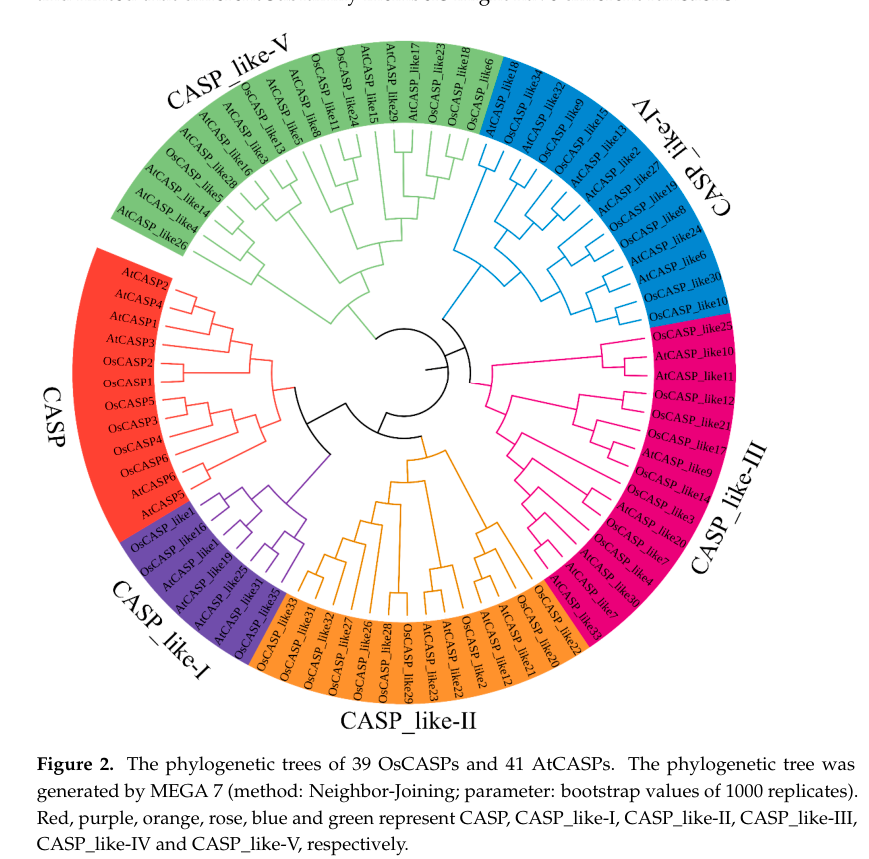

OsBLE3 (CASP-like protein BLE3 / OsCASPL1C2, brassinolide-enhanced 3) is a small tetraspan (four-transmembrane) plasma-membrane protein of the CASP-like (CASPL) subfamily of the MARVEL-related Casparian strip membrane domain protein family. Unlike most CASPLs it is functionally characterized: it is a brassinolide-upregulated gene whose expression depends on both brassinosteroid (BR) and auxin and is concentrated in roots, leaf sheaths, the shoot apical meristem, organ primordia and vascular tissue. Antisense knock-down causes growth retardation and reduces internode cell length to about 70% of wild type, showing that OsBLE3 promotes cell elongation in rice through dual BR/auxin regulation. No specific molecular (enzymatic/transport) activity is established; it is presumed to act as a plasma-membrane scaffold.
| GO Term | Evidence | Action | Reason |
|---|---|---|---|
|
GO:0005886
plasma membrane
|
IEA
GO_REF:0000044 |
ACCEPT |
Summary: Correct, well-supported plasma-membrane localization for this multi-pass CASP-like protein.
Reason: UniProt annotates a multi-pass cell-membrane protein, consistent with the four-transmembrane CASP/CASPL scaffold architecture.
Supporting Evidence:
file:ORYSJ/BLE3/BLE3-uniprot.txt
SUBCELLULAR LOCATION: Cell membrane
|
|
GO:0009733
response to auxin
|
IEP
PMID:16808934 OsBLE3, a brassinolide-enhanced gene, is involved in the gro... |
ACCEPT |
Summary: Experimentally supported: OsBLE3 expression is enhanced by auxin (IAA) and the promoter contains auxin-response elements.
Reason: Expression-based (IEP) evidence shows OsBLE3 is co-induced by auxin and harbours auxin-response elements, placing it in the auxin response.
Supporting Evidence:
PMID:16808934
existence of auxin response elements
|
|
GO:0035264
multicellular organism growth
|
IMP
PMID:16808934 OsBLE3, a brassinolide-enhanced gene, is involved in the gro... |
ACCEPT |
Summary: Experimentally supported: antisense OsBLE3 plants show growth retardation.
Reason: Mutant/antisense phenotype (IMP) directly links OsBLE3 to organismal growth.
Supporting Evidence:
PMID:16808934
growth retardation
|
|
GO:0009741
response to brassinosteroid
|
IMP
PMID:16808934 OsBLE3, a brassinolide-enhanced gene, is involved in the gro... |
ACCEPT |
Summary: Experimentally supported: OsBLE3 is a brassinolide-enhanced gene, reduced in BR-deficient/insensitive backgrounds.
Reason: OsBLE3 induction by brassinolide and its dependence on BR signalling (reduced in brd1 and BRI1-antisense plants) support involvement in the brassinosteroid response.
Supporting Evidence:
PMID:16808934
brassinolide-enhanced gene
|
|
GO:0009826
unidimensional cell growth
|
IMP
PMID:16808934 OsBLE3, a brassinolide-enhanced gene, is involved in the gro... |
ACCEPT |
Summary: Experimentally supported: antisense lines show reduced internode cell length, i.e. impaired cell elongation.
Reason: The internode cell-length phenotype (IMP) directly demonstrates a role in unidimensional cell growth (elongation).
Supporting Evidence:
PMID:16808934
Internode cell length of the OsBLE3 antisense transgenic
|
Q: What is the molecular mechanism by which OsBLE3 promotes cell elongation downstream of brassinosteroid and auxin?
Experiment: Identify OsBLE3 plasma-membrane interactors and test whether it scaffolds BR/auxin-responsive growth machinery; phenotype CRISPR knockouts for internode elongation.
Type: protein interaction and genetic analysis
The research report should be a detailed narrative explaining the function, biological processes, and localization of the gene product. Citations should be given for all claims.
You should prioritize authoritative reviews and primary scientific literature when conducting research. You can supplement
this with annotations you find in gene/protein databases, but these can be outdated or inaccurate.
We are specifically interested in the primary function of the gene - for enzymes, what reaction is catalyzed, and what is the substrate specificity? For transporters, what is the substrate? For structural proteins or adapters, what is the broader structural role? For signaling molecules, what is the role in the pathway.
We are interested in where in or outside the cell the gene product carries out its function.
We are also interested in the signaling or biochemical pathways in which the gene functions. We are less interested in broad pleiotropic effects, except where these elucidate the precise role.
Include evidence where possible. We are interested in both experimental evidence as well as inference from structure, evolution, or bioinformatic analysis. Precise studies should be prioritized over high-throughput, where available.
The user-specified target is UniProt Q84UT5, annotated as a CASP-like protein BLE3 (CASP/CASPL family) from Oryza sativa subsp. japonica (rice). In the peer‑reviewed primary literature, a rice gene explicitly named OsBLE3 is experimentally characterized and maps to LOC_Os05g15630 (chromosome 5), i.e., the same locus name included in the UniProt record provided by the user (LOC_Os05g15630). This supports that the gene symbol BLE3/OsBLE3 corresponds to the rice locus used in that study (https://doi.org/10.1016/j.phytochem.2006.05.026; publication date: 2006-07) (yang2006osble3abrassinolideenhanced pages 2-4, yang2006osble3abrassinolideenhanced pages 1-2).
However, the 2006 OsBLE3 study describes a small multi‑pass membrane protein with 3 predicted transmembrane segments and a mitochondrial targeting peptide / probable mitochondrial inner membrane localization, while modern CASP/CASPL literature commonly describes CASP/CASPL proteins as 4‑transmembrane (MARVEL‑branch) plasma‑membrane proteins that assemble the Casparian strip membrane domain. This creates a non-trivial annotation tension: (i) BLE3 may indeed be a CASP/CASPL (DUF588/PF04535-based) family member but earlier predictions differed, or (ii) some database annotations may have been revised/propagated without direct protein-localization validation for BLE3/Q84UT5. Because the tools here cannot directly query UniProt/InterPro records, I treat CASP/CASPL assignment for Q84UT5 as plausible but not experimentally verified for BLE3 specifically based on the retrieved evidence (yang2006osble3abrassinolideenhanced pages 2-4, barbosa2023directedgrowthand pages 11-12).
Casparian strip (CS): a lignin-impregnated cell-wall band in root endodermis (and in some species exodermis) that forms an apoplastic diffusion barrier controlling water and mineral movement. Disrupting CS integrity can alter ion homeostasis and nutrient uptake (xue2024comparativeanalysisof pages 1-2, yang2022riceoscasp1orchestrates pages 1-2).
CASP / CASP-like (CASPL) proteins: membrane proteins that define the Casparian strip membrane domain (CSD) and contribute to forming a scaffold/matrix that recruits/organizes lignin polymerization components and secreted factors involved in localized lignification (e.g., RBOHF, ESB1, PER64, UCC1 are cited in the family-level context). In rice, CASP/CASPL repertoires have been systematically enumerated using the DUF588 (PF04535) HMM as the defining domain signature (xue2024comparativeanalysisof pages 1-2, yang2022riceoscasp1orchestrates pages 1-2).
Yang et al. cloned OsBLE3 cDNA (865 bp) encoding a 162 aa protein (~16.8 kDa, predicted pI 8.24), and predicted three transmembrane domains plus an N‑terminal targeting peptide, with PSORT/MitoProt II supporting probable mitochondrial inner membrane localization (https://doi.org/10.1016/j.phytochem.2006.05.026; 2006-07) (yang2006osble3abrassinolideenhanced pages 2-4, yang2006osble3abrassinolideenhanced pages 6-8).
OsBLE3 transcript accumulation was highest in roots and leaf sheath and was detected in regions consistent with active growth: vascular bundles, shoot apical meristem, organ primordia, and branch root primordia (via Northern blot, in situ hybridization, and promoter::GUS) (yang2006osble3abrassinolideenhanced pages 2-4, yang2006osble3abrassinolideenhanced pages 1-2, yang2006osble3abrassinolideenhanced pages 4-6).
OsBLE3 was originally identified as a brassinolide (BL)-enhanced gene. BL induces OsBLE3 transcript levels dose-dependently; IAA (auxin) also induces OsBLE3 dose‑dependently; and BL can further enhance OsBLE3 expression at low IAA concentrations. The OsBLE3 promoter contains auxin response element motifs (TGTCTC), supporting dual hormonal regulation (yang2006osble3abrassinolideenhanced pages 4-6, yang2006osble3abrassinolideenhanced pages 8-10).
Genetic/hormone signaling placement: OsBLE3 expression was strongly reduced in the BR‑deficient brd1 mutant, and BL induction was impaired in OsBRI1 antisense plants, indicating dependence on BR biosynthesis and (at least in part) BR receptor signaling (yang2006osble3abrassinolideenhanced pages 4-6, yang2006osble3abrassinolideenhanced pages 1-2).
Yang et al. generated antisense OsBLE3 transgenic rice lines. Multiple lines (e.g., A7/A11/A12) showed greatly reduced OsBLE3 transcript levels and exhibited growth repression / semi-dwarf phenotypes, including shorter roots, less branching, and shortened internodes. Internode cell length was reduced to approximately 65–75% of control (often summarized as ~70%), supporting a role in cell elongation (yang2006osble3abrassinolideenhanced pages 6-8, yang2006osble3abrassinolideenhanced pages 1-2).
In lamina-joint bending assays, antisense plants remained BL responsive but showed markedly reduced bending compared with controls, consistent with OsBLE3 contributing to BR-associated growth outputs rather than being absolutely required for BL perception (yang2006osble3abrassinolideenhanced pages 6-8).
A 2024 comparative genomics study defined rice CASP family members using a DUF588/PF04535 HMM, identifying 41 OsCASP genes and organizing them into six subgroups; it further reports that many OsCASP genes show root-enriched expression, with endodermal expression patterns emphasized as relevant to CS function (https://doi.org/10.3390/ijms25189858; 2024-09) (xue2024comparativeanalysisof pages 1-2, xue2024comparativeanalysisof pages 2-4).
The same study proposed candidate OsCASP_like genes with particularly pronounced root/endodermal expression (e.g., OsCASP_like11/9 or 11/19 as described in summaries) and reported ion/stress-responsive expression patterns for subsets of OsCASP_like genes. This provides current “family context” but does not directly validate BLE3/Q84UT5 function or localization (xue2024comparativeanalysisof pages 1-2, xue2024comparativeanalysisof media a3353a44).
A 2023 Nature Communications study in Arabidopsis provided mechanistic insight into how CASPs shape and fuse membrane-wall microdomains during CS formation, implicating CASPs in organizing exocyst/secretory dynamics and identifying candidate interacting partners via proximity labeling (https://doi.org/10.1038/s41467-023-37265-7; 2023-07) (barbosa2023directedgrowthand pages 11-12). This is authoritative mechanistic evidence for CASP function, but it is not BLE3-specific.
A 2024 rice/wheat transcriptomic paper on the tertiary amine BMVE explicitly cites OsBLE3 (LOC_Os05g15630) as an auxin-responsive gene reported to be involved in cell elongation with dual regulation by brassinolide and auxin, reflecting continued community usage of OsBLE3 as a BR/auxin-responsive growth gene (https://doi.org/10.3389/fpls.2023.1273620; 2024-01) (contextual mention; evidence derived from the older primary study) (yang2006osble3abrassinolideenhanced pages 1-2).
Hormone-responsive growth control: The most direct BLE3-relevant application direction is that OsBLE3 is a hormone (BR/auxin)-responsive growth regulator linked to cell elongation and plant architecture traits (semi-dwarfing, internode length). While no applied breeding/CRISPR deployment for BLE3 itself was retrieved here, its phenotype and BR/auxin regulation make it conceptually relevant to architectural trait engineering (yang2006osble3abrassinolideenhanced pages 6-8, yang2006osble3abrassinolideenhanced pages 8-10).
Barrier biology (CASP/CASPL pathway applications): CASP/CASPL genes in rice are implicated in CS/suberin barrier formation, which can influence nutrient homeostasis and stress responses (e.g., salt). For example, OsCASP1 mutants show CS delays and altered suberin/lignin patterns with downstream ion imbalance and salt-related phenotypes, motivating “barrier engineering” concepts for nutrient/stress resilience. This is strong for CASP family members generally, but it is not direct evidence for BLE3 (yang2022riceoscasp1orchestrates pages 1-2, yang2022riceoscasp1orchestrates pages 15-16).
The highest-confidence, BLE3-specific conclusion is that OsBLE3 is a brassinolide-enhanced and auxin-responsive gene that positively contributes to rice growth via cell elongation, supported by antisense phenotypes and internode cell-length measurements (yang2006osble3abrassinolideenhanced pages 6-8, yang2006osble3abrassinolideenhanced pages 8-10).
Direct predictions in the OsBLE3 primary paper support mitochondrial inner membrane localization, but CASP/CASPL family biology places proteins at plasma membrane microdomains (CSD). Without direct protein localization experiments for BLE3/Q84UT5 (e.g., BLE3-GFP), localization remains uncertain; any statement that BLE3 acts at the CSD should be treated as inference contingent on confirming Q84UT5 as a CASP/CASPL member (yang2006osble3abrassinolideenhanced pages 2-4, barbosa2023directedgrowthand pages 11-12).
The strongest bridge between the two is the repeated use of DUF588/PF04535 as the defining signature for rice CASP/CASPL gene discovery; the 2006 OsBLE3 study also references DUF588-like annotation for OsBLE3. This suggests BLE3 could be placed within the broader DUF588/PF04535 space used to define CASP families, but the predicted TM count and localization in 2006 differ from recent family topology models (yang2006osble3abrassinolideenhanced pages 2-4, xue2024comparativeanalysisof pages 1-2, barbosa2023directedgrowthand pages 11-12). Definitive resolution requires current sequence/domain/topology confirmation (e.g., current UniProt/InterPro features and/or experimental localization).
The 2024 comparative CASP family paper contains figures summarizing conserved domains/motifs and multiple expression heatmaps across tissues, root cell types, abiotic stress conditions, and ion-deficiency treatments for OsCASP genes (xue2024comparativeanalysisof media a3353a44, xue2024comparativeanalysisof media 937b3861, xue2024comparativeanalysisof media c8c8a19b, xue2024comparativeanalysisof media b24ca4f6, xue2024comparativeanalysisof media 15af25cc, xue2024comparativeanalysisof media e6e112ce).
| Claim/Aspect | Evidence type | Key details | Source (paper, year, DOI/URL) | Citation ID(s) |
|---|---|---|---|---|
| Gene identifiers and mapping | Direct experiment + database-linked mapping | OsBLE3 in the literature maps to rice LOC_Os05g15630 on chromosome 5; the user-supplied target further maps this locus to UniProt Q84UT5 / Os05g0245300. Direct literature supports the OsBLE3 ↔ LOC_Os05g15630 link, but accession-level reconciliation with the CASP-like UniProt annotation should be treated cautiously because older literature emphasized a BL-induced gene rather than explicit CASP family placement. | Yang et al., 2006, Phytochemistry, DOI: 10.1016/j.phytochem.2006.05.026, https://doi.org/10.1016/j.phytochem.2006.05.026; Dharni et al., 2024, Frontiers in Plant Science, DOI: 10.3389/fpls.2023.1273620, https://doi.org/10.3389/fpls.2023.1273620 | (yang2006osble3abrassinolideenhanced pages 2-4, yang2006osble3abrassinolideenhanced pages 1-2) |
| Protein length / TMs / DUF588 / PF04535 | Direct experiment + bioinformatic prediction + family inference | The 2006 OsBLE3 study reported an 865 bp cDNA encoding a 162 aa protein (~16.8 kDa, pI 8.24) with 3 predicted transmembrane domains and a DUF588-domain assignment. Recent CASP/CASPL family studies define rice CASP proteins using the DUF588/PF04535 HMM, supporting that DUF588/PF04535 is the key family-level signature used for CASP/CASPL annotation in rice. | Yang et al., 2006, Phytochemistry, DOI: 10.1016/j.phytochem.2006.05.026, https://doi.org/10.1016/j.phytochem.2006.05.026; Xue et al., 2024, Int. J. Mol. Sci., DOI: 10.3390/ijms25189858, https://doi.org/10.3390/ijms25189858 | (yang2006osble3abrassinolideenhanced pages 2-4, xue2024comparativeanalysisof pages 1-2, xue2024comparativeanalysisof pages 2-4) |
| Predicted localization: mitochondrial inner membrane vs plasma membrane CSD | Bioinformatic prediction vs family inference | For OsBLE3 specifically, PSORT/MitoProt-based prediction suggested an N-terminal targeting peptide and probable mitochondrial inner membrane localization. In contrast, CASP/CASPL family proteins are generally inferred or shown to localize to plasma-membrane Casparian strip domains (CSDs), where they organize membrane-wall microdomains. Thus, localization evidence is currently conflicting between direct old prediction for OsBLE3 and family-based CASP/CASPL expectation. | Yang et al., 2006, Phytochemistry, DOI: 10.1016/j.phytochem.2006.05.026, https://doi.org/10.1016/j.phytochem.2006.05.026; Yang et al., 2022, Frontiers in Plant Science, DOI: 10.3389/fpls.2022.1007300, https://doi.org/10.3389/fpls.2022.1007300; Barbosa et al., 2023, Nature Communications, DOI: 10.1038/s41467-023-37265-7, https://doi.org/10.1038/s41467-023-37265-7 | (yang2006osble3abrassinolideenhanced pages 2-4, yang2006osble3abrassinolideenhanced pages 6-8, yang2022riceoscasp1orchestrates pages 2-3, barbosa2023directedgrowthand pages 11-12) |
| Regulation by brassinolide and auxin | Direct experiment | OsBLE3 transcript accumulation is induced by brassinolide (BL) in a dose-dependent manner; promoter analyses identified auxin-response elements (TGTCTC), and IAA also induced expression, with BL enhancing expression at low IAA. OsBLE3 expression was strongly reduced in the BL-deficient brd1 background and BL induction was impaired in OsBRI1-antisense plants, placing OsBLE3 downstream of BR signaling and under dual BR/auxin control. | Yang et al., 2006, Phytochemistry, DOI: 10.1016/j.phytochem.2006.05.026, https://doi.org/10.1016/j.phytochem.2006.05.026 | (yang2006osble3abrassinolideenhanced pages 1-2, yang2006osble3abrassinolideenhanced pages 8-10, yang2006osble3abrassinolideenhanced pages 4-6, komatsuUnknownyearartificiallycontrollingmorphogenesis pages 3-4) |
| Expression patterns: roots/leaf sheath; vascular tissues; branch root primordia | Direct experiment | Northern blot, in situ hybridization, and promoter::GUS analyses showed strongest expression in roots and leaf sheaths, little to none in leaf blade, and signal in vascular bundles, nodal vascular tissues, shoot apical meristem, organ primordia, and branch root primordia. BL-responsive GUS activity was prominent in vascular tissues and lower-root primordia-like spots. | Yang et al., 2006, Phytochemistry, DOI: 10.1016/j.phytochem.2006.05.026, https://doi.org/10.1016/j.phytochem.2006.05.026 | (yang2006osble3abrassinolideenhanced pages 2-4, yang2006osble3abrassinolideenhanced pages 1-2, yang2006osble3abrassinolideenhanced pages 4-6) |
| Phenotypes from antisense | Direct experiment | Twelve antisense lines were generated; at least lines A7, A11, and A12 showed markedly reduced OsBLE3 transcript levels. Antisense plants were growth retarded/semi-dwarf, had shorter roots, reduced branching, shortened internodes, and reduced internode cell length to ~65–75% of control (~70% in summary statements). Lamina-joint bending remained BL responsive but was reduced versus controls, supporting a role in BR-related cell elongation/growth. | Yang et al., 2006, Phytochemistry, DOI: 10.1016/j.phytochem.2006.05.026, https://doi.org/10.1016/j.phytochem.2006.05.026 | (yang2006osble3abrassinolideenhanced pages 6-8, yang2006osble3abrassinolideenhanced pages 1-2, yang2006osble3abrassinolideenhanced pages 8-10, komatsuUnknownyearartificiallycontrollingmorphogenesis pages 3-4) |
| CASP/CASPL family roles in Casparian strip formation and lignin/suberin deposition | Family inference + direct evidence from related rice genes | CASP/CASPL proteins are membrane-domain scaffold proteins that help define the Casparian strip domain, recruit lignin polymerization machinery, and organize apoplastic barrier formation. In rice, OsCASP1 directly contributes to timely Casparian strip formation, proper lignin patterning, and suberin deposition in small lateral roots; loss of OsCASP1 delays CS formation and perturbs ion homeostasis. These data provide the strongest mechanistic basis for inferring a CASP-like role if BLE3/Q84UT5 is indeed a CASP/CASPL member. | Yang et al., 2022, Frontiers in Plant Science, DOI: 10.3389/fpls.2022.1007300, https://doi.org/10.3389/fpls.2022.1007300; Barbosa et al., 2023, Nature Communications, DOI: 10.1038/s41467-023-37265-7, https://doi.org/10.1038/s41467-023-37265-7 | (yang2022riceoscasp1orchestrates pages 1-2, yang2022riceoscasp1orchestrates pages 2-3, yang2022riceoscasp1orchestrates pages 15-16, barbosa2023directedgrowthand pages 11-12, yang2022riceoscasp1orchestrates pages 3-5) |
| Recent 2024 comparative CASP family study findings relevant to rice | Bioinformatic family study | A 2024 comparative study identified 41 OsCASP genes in rice using the DUF588/PF04535 HMM, grouped them into six subfamilies, and found most are root enriched, especially in endodermal cells. Candidate rice genes for Casparian-strip-related roles included OsCASP_like11/9 (or 11/19 as reported in summary text) for root/endodermal expression and OsCASP_like2/3/13/17/21/30 for ion-defect responses. The study provides current family context but did not directly validate BLE3/Q84UT5 experimentally. | Xue et al., 2024, Int. J. Mol. Sci., DOI: 10.3390/ijms25189858, https://doi.org/10.3390/ijms25189858 | (xue2024comparativeanalysisof pages 1-2, xue2024comparativeanalysisof pages 2-4, xue2024comparativeanalysisof media a3353a44, xue2024comparativeanalysisof media 937b3861, xue2024comparativeanalysisof media c8c8a19b, xue2024comparativeanalysisof media b24ca4f6, xue2024comparativeanalysisof media 15af25cc, xue2024comparativeanalysisof media e6e112ce) |
Table: This table compares direct experimental evidence for rice OsBLE3/LOC_Os05g15630 with broader CASP/CASPL family annotations used in recent rice studies. It is useful for separating what is experimentally shown for BLE3 from what is currently inferred from family-level CASP biology.
References
(yang2006osble3abrassinolideenhanced pages 2-4): Guangxiao Yang, Hidemitsu Nakamura, Hiroaki Ichikawa, Hidemi Kitano, and Setsuko Komatsu. Osble3, a brassinolide-enhanced gene, is involved in the growth of rice. Phytochemistry, 67 14:1442-54, Jul 2006. URL: https://doi.org/10.1016/j.phytochem.2006.05.026, doi:10.1016/j.phytochem.2006.05.026. This article has 32 citations and is from a peer-reviewed journal.
(yang2006osble3abrassinolideenhanced pages 1-2): Guangxiao Yang, Hidemitsu Nakamura, Hiroaki Ichikawa, Hidemi Kitano, and Setsuko Komatsu. Osble3, a brassinolide-enhanced gene, is involved in the growth of rice. Phytochemistry, 67 14:1442-54, Jul 2006. URL: https://doi.org/10.1016/j.phytochem.2006.05.026, doi:10.1016/j.phytochem.2006.05.026. This article has 32 citations and is from a peer-reviewed journal.
(barbosa2023directedgrowthand pages 11-12): Inês Catarina Ramos Barbosa, D. De Bellis, Isabelle Flückiger, E. Bellani, Mathieu Grangé-Guerment, Kian Hématy, and N. Geldner. Directed growth and fusion of membrane-wall microdomains requires casp-mediated inhibition and displacement of secretory foci. Nature Communications, Jul 2023. URL: https://doi.org/10.1038/s41467-023-37265-7, doi:10.1038/s41467-023-37265-7. This article has 33 citations and is from a highest quality peer-reviewed journal.
(xue2024comparativeanalysisof pages 1-2): Baoping Xue, Zicong Liang, Yue Liu, Dongyang Li, Peng Cao, and Chang Liu. Comparative analysis of casparian strip membrane domain protein family in oryza sativa (l.) and arabidopsis thaliana (l.). International Journal of Molecular Sciences, 25:9858, Sep 2024. URL: https://doi.org/10.3390/ijms25189858, doi:10.3390/ijms25189858. This article has 5 citations.
(yang2022riceoscasp1orchestrates pages 1-2): Xianfeng Yang, Huifang Xie, Qunqing Weng, Kangjing Liang, Xiujuan Zheng, Yuchun Guo, and Xinli Sun. Rice oscasp1 orchestrates casparian strip formation and suberin deposition in small lateral roots to maintain nutrient homeostasis. Frontiers in Plant Science, Dec 2022. URL: https://doi.org/10.3389/fpls.2022.1007300, doi:10.3389/fpls.2022.1007300. This article has 18 citations.
(yang2006osble3abrassinolideenhanced pages 6-8): Guangxiao Yang, Hidemitsu Nakamura, Hiroaki Ichikawa, Hidemi Kitano, and Setsuko Komatsu. Osble3, a brassinolide-enhanced gene, is involved in the growth of rice. Phytochemistry, 67 14:1442-54, Jul 2006. URL: https://doi.org/10.1016/j.phytochem.2006.05.026, doi:10.1016/j.phytochem.2006.05.026. This article has 32 citations and is from a peer-reviewed journal.
(yang2006osble3abrassinolideenhanced pages 4-6): Guangxiao Yang, Hidemitsu Nakamura, Hiroaki Ichikawa, Hidemi Kitano, and Setsuko Komatsu. Osble3, a brassinolide-enhanced gene, is involved in the growth of rice. Phytochemistry, 67 14:1442-54, Jul 2006. URL: https://doi.org/10.1016/j.phytochem.2006.05.026, doi:10.1016/j.phytochem.2006.05.026. This article has 32 citations and is from a peer-reviewed journal.
(yang2006osble3abrassinolideenhanced pages 8-10): Guangxiao Yang, Hidemitsu Nakamura, Hiroaki Ichikawa, Hidemi Kitano, and Setsuko Komatsu. Osble3, a brassinolide-enhanced gene, is involved in the growth of rice. Phytochemistry, 67 14:1442-54, Jul 2006. URL: https://doi.org/10.1016/j.phytochem.2006.05.026, doi:10.1016/j.phytochem.2006.05.026. This article has 32 citations and is from a peer-reviewed journal.
(xue2024comparativeanalysisof pages 2-4): Baoping Xue, Zicong Liang, Yue Liu, Dongyang Li, Peng Cao, and Chang Liu. Comparative analysis of casparian strip membrane domain protein family in oryza sativa (l.) and arabidopsis thaliana (l.). International Journal of Molecular Sciences, 25:9858, Sep 2024. URL: https://doi.org/10.3390/ijms25189858, doi:10.3390/ijms25189858. This article has 5 citations.
(xue2024comparativeanalysisof media a3353a44): Baoping Xue, Zicong Liang, Yue Liu, Dongyang Li, Peng Cao, and Chang Liu. Comparative analysis of casparian strip membrane domain protein family in oryza sativa (l.) and arabidopsis thaliana (l.). International Journal of Molecular Sciences, 25:9858, Sep 2024. URL: https://doi.org/10.3390/ijms25189858, doi:10.3390/ijms25189858. This article has 5 citations.
(yang2022riceoscasp1orchestrates pages 15-16): Xianfeng Yang, Huifang Xie, Qunqing Weng, Kangjing Liang, Xiujuan Zheng, Yuchun Guo, and Xinli Sun. Rice oscasp1 orchestrates casparian strip formation and suberin deposition in small lateral roots to maintain nutrient homeostasis. Frontiers in Plant Science, Dec 2022. URL: https://doi.org/10.3389/fpls.2022.1007300, doi:10.3389/fpls.2022.1007300. This article has 18 citations.
(xue2024comparativeanalysisof media 937b3861): Baoping Xue, Zicong Liang, Yue Liu, Dongyang Li, Peng Cao, and Chang Liu. Comparative analysis of casparian strip membrane domain protein family in oryza sativa (l.) and arabidopsis thaliana (l.). International Journal of Molecular Sciences, 25:9858, Sep 2024. URL: https://doi.org/10.3390/ijms25189858, doi:10.3390/ijms25189858. This article has 5 citations.
(xue2024comparativeanalysisof media c8c8a19b): Baoping Xue, Zicong Liang, Yue Liu, Dongyang Li, Peng Cao, and Chang Liu. Comparative analysis of casparian strip membrane domain protein family in oryza sativa (l.) and arabidopsis thaliana (l.). International Journal of Molecular Sciences, 25:9858, Sep 2024. URL: https://doi.org/10.3390/ijms25189858, doi:10.3390/ijms25189858. This article has 5 citations.
(xue2024comparativeanalysisof media b24ca4f6): Baoping Xue, Zicong Liang, Yue Liu, Dongyang Li, Peng Cao, and Chang Liu. Comparative analysis of casparian strip membrane domain protein family in oryza sativa (l.) and arabidopsis thaliana (l.). International Journal of Molecular Sciences, 25:9858, Sep 2024. URL: https://doi.org/10.3390/ijms25189858, doi:10.3390/ijms25189858. This article has 5 citations.
(xue2024comparativeanalysisof media 15af25cc): Baoping Xue, Zicong Liang, Yue Liu, Dongyang Li, Peng Cao, and Chang Liu. Comparative analysis of casparian strip membrane domain protein family in oryza sativa (l.) and arabidopsis thaliana (l.). International Journal of Molecular Sciences, 25:9858, Sep 2024. URL: https://doi.org/10.3390/ijms25189858, doi:10.3390/ijms25189858. This article has 5 citations.
(xue2024comparativeanalysisof media e6e112ce): Baoping Xue, Zicong Liang, Yue Liu, Dongyang Li, Peng Cao, and Chang Liu. Comparative analysis of casparian strip membrane domain protein family in oryza sativa (l.) and arabidopsis thaliana (l.). International Journal of Molecular Sciences, 25:9858, Sep 2024. URL: https://doi.org/10.3390/ijms25189858, doi:10.3390/ijms25189858. This article has 5 citations.
(yang2022riceoscasp1orchestrates pages 2-3): Xianfeng Yang, Huifang Xie, Qunqing Weng, Kangjing Liang, Xiujuan Zheng, Yuchun Guo, and Xinli Sun. Rice oscasp1 orchestrates casparian strip formation and suberin deposition in small lateral roots to maintain nutrient homeostasis. Frontiers in Plant Science, Dec 2022. URL: https://doi.org/10.3389/fpls.2022.1007300, doi:10.3389/fpls.2022.1007300. This article has 18 citations.
(komatsuUnknownyearartificiallycontrollingmorphogenesis pages 3-4): S Komatsu. Artificially controlling morphogenesis by altering plant function based on the elucidation of molecular mechanism for brassinosteroids and gibberellins signal …. Unknown journal, Unknown year.
(yang2022riceoscasp1orchestrates pages 3-5): Xianfeng Yang, Huifang Xie, Qunqing Weng, Kangjing Liang, Xiujuan Zheng, Yuchun Guo, and Xinli Sun. Rice oscasp1 orchestrates casparian strip formation and suberin deposition in small lateral roots to maintain nutrient homeostasis. Frontiers in Plant Science, Dec 2022. URL: https://doi.org/10.3389/fpls.2022.1007300, doi:10.3389/fpls.2022.1007300. This article has 18 citations.

id: Q84UT5
gene_symbol: BLE3
product_type: PROTEIN
status: DRAFT
taxon:
id: NCBITaxon:39947
label: Oryza sativa subsp. japonica
description: 'OsBLE3 (CASP-like protein BLE3 / OsCASPL1C2, brassinolide-enhanced 3) is a small tetraspan
(four-transmembrane) plasma-membrane protein of the CASP-like (CASPL) subfamily of the MARVEL-related
Casparian strip membrane domain protein family. Unlike most CASPLs it is functionally characterized:
it is a brassinolide-upregulated gene whose expression depends on both brassinosteroid (BR) and auxin
and is concentrated in roots, leaf sheaths, the shoot apical meristem, organ primordia and vascular
tissue. Antisense knock-down causes growth retardation and reduces internode cell length to about 70%
of wild type, showing that OsBLE3 promotes cell elongation in rice through dual BR/auxin regulation.
No specific molecular (enzymatic/transport) activity is established; it is presumed to act as a plasma-membrane
scaffold.'
existing_annotations:
- term:
id: GO:0005886
label: plasma membrane
evidence_type: IEA
original_reference_id: GO_REF:0000044
qualifier: located_in
review:
summary: Correct, well-supported plasma-membrane localization for this multi-pass CASP-like protein.
action: ACCEPT
reason: UniProt annotates a multi-pass cell-membrane protein, consistent with the four-transmembrane
CASP/CASPL scaffold architecture.
supported_by:
- reference_id: file:ORYSJ/BLE3/BLE3-uniprot.txt
supporting_text: 'SUBCELLULAR LOCATION: Cell membrane'
- term:
id: GO:0009733
label: response to auxin
evidence_type: IEP
original_reference_id: PMID:16808934
qualifier: involved_in
review:
summary: 'Experimentally supported: OsBLE3 expression is enhanced by auxin (IAA) and the promoter
contains auxin-response elements.'
action: ACCEPT
reason: Expression-based (IEP) evidence shows OsBLE3 is co-induced by auxin and harbours auxin-response
elements, placing it in the auxin response.
supported_by:
- reference_id: PMID:16808934
supporting_text: existence of auxin response elements
- term:
id: GO:0035264
label: multicellular organism growth
evidence_type: IMP
original_reference_id: PMID:16808934
qualifier: involved_in
review:
summary: 'Experimentally supported: antisense OsBLE3 plants show growth retardation.'
action: ACCEPT
reason: Mutant/antisense phenotype (IMP) directly links OsBLE3 to organismal growth.
supported_by:
- reference_id: PMID:16808934
supporting_text: growth retardation
- term:
id: GO:0009741
label: response to brassinosteroid
evidence_type: IMP
original_reference_id: PMID:16808934
qualifier: involved_in
review:
summary: 'Experimentally supported: OsBLE3 is a brassinolide-enhanced gene, reduced in BR-deficient/insensitive
backgrounds.'
action: ACCEPT
reason: OsBLE3 induction by brassinolide and its dependence on BR signalling (reduced in brd1 and
BRI1-antisense plants) support involvement in the brassinosteroid response.
supported_by:
- reference_id: PMID:16808934
supporting_text: brassinolide-enhanced gene
- term:
id: GO:0009826
label: unidimensional cell growth
evidence_type: IMP
original_reference_id: PMID:16808934
qualifier: involved_in
review:
summary: 'Experimentally supported: antisense lines show reduced internode cell length, i.e. impaired
cell elongation.'
action: ACCEPT
reason: The internode cell-length phenotype (IMP) directly demonstrates a role in unidimensional cell
growth (elongation).
supported_by:
- reference_id: PMID:16808934
supporting_text: Internode cell length of the OsBLE3 antisense transgenic
references:
- id: file:ORYSJ/BLE3/BLE3-uniprot.txt
title: UniProtKB reviewed entry for BLE3
findings:
- statement: BLE3 is a multi-pass cell-membrane CASP-like protein of the Casparian strip membrane proteins
family.
- id: file:ORYSJ/BLE3/BLE3-goa.tsv
title: QuickGO GOA annotations for BLE3
findings:
- statement: GOA supplied the annotations reviewed in this file.
- id: PMID:24920445
title: Functional and evolutionary analysis of the CASPARIAN STRIP MEMBRANE DOMAIN PROTEIN family.
reference_review:
relevance: HIGH
correctness: VERIFIED
review_notes: PubMed-verified family-defining paper establishing the unified CASP/CASPL nomenclature.
findings:
- statement: Places OsBLE3 in the CASPL subfamily (OsCASPL1C2) of plasma-membrane tetraspan scaffolds.
- id: GO_REF:0000044
title: Gene Ontology annotation based on UniProtKB/Swiss-Prot Subcellular Location vocabulary mapping
findings:
- statement: Supplied the IEA plasma membrane annotation.
- id: PMID:16808934
title: OsBLE3, a brassinolide-enhanced gene, is involved in the growth of rice.
findings:
- statement: OsBLE3 (OsCASPL1C2) is a brassinolide-upregulated gene expressed in roots, leaf sheaths
and vascular tissue; its expression is controlled by both brassinosteroid and auxin, and antisense
knock-down causes growth retardation with internode cell length reduced to ~70% of wild type, indicating
a role in cell elongation.
reference_review:
relevance: HIGH
correctness: VERIFIED
review_notes: PubMed-verified; primary functional characterization of OsBLE3/OsCASPL1C2.
- id: file:ORYSJ/BLE3/BLE3-deep-research-falcon.md
title: Falcon (Edison) deep-research report for OsBLE3/OsCASPL1C2
findings:
- statement: 'Deep-research synthesis of OsBLE3: a brassinolide/auxin-regulated CASP-like plasma-membrane
protein promoting cell elongation in rice, expressed in roots, leaf sheaths and vascular tissue.'
core_functions:
- description: Plasma-membrane CASP-like protein that promotes cell elongation (unidimensional cell growth)
in rice, acting downstream of and regulated by brassinosteroid and auxin.
supported_by:
- reference_id: file:ORYSJ/BLE3/BLE3-uniprot.txt
supporting_text: Involved in cell elongation in rice through dual regulation
- reference_id: PMID:16808934
supporting_text: Internode cell length of the OsBLE3 antisense transgenic
directly_involved_in:
- id: GO:0009826
label: unidimensional cell growth
locations:
- id: GO:0005886
label: plasma membrane
proposed_new_terms: []
suggested_questions:
- question: What is the molecular mechanism by which OsBLE3 promotes cell elongation downstream of brassinosteroid
and auxin?
suggested_experiments:
- description: Identify OsBLE3 plasma-membrane interactors and test whether it scaffolds BR/auxin-responsive
growth machinery; phenotype CRISPR knockouts for internode elongation.
experiment_type: protein interaction and genetic analysis
{kind=link}